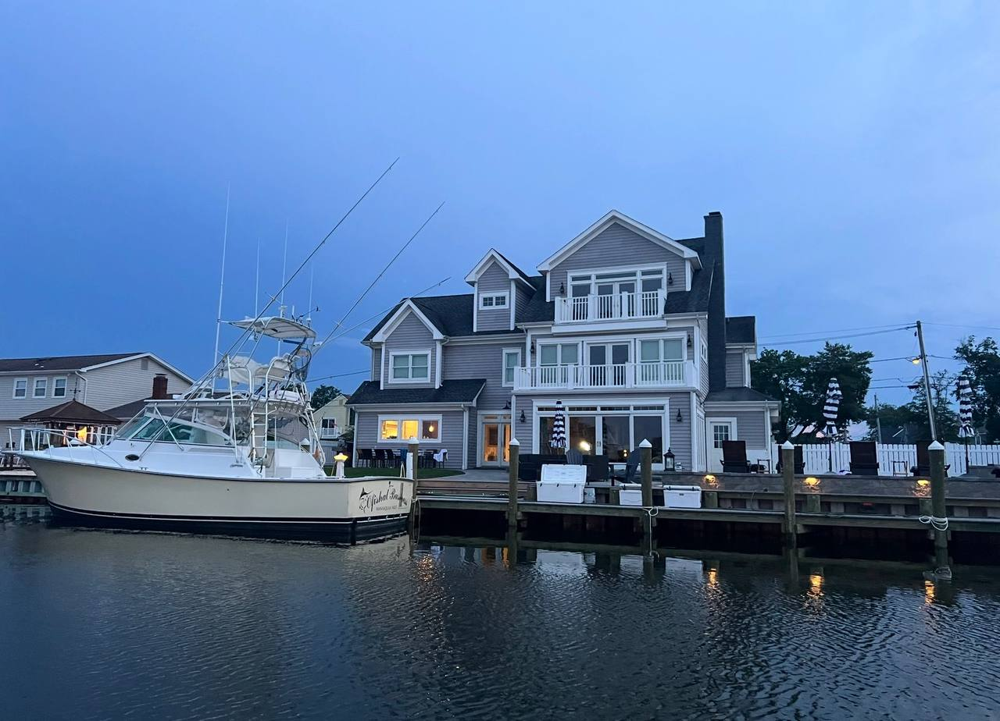
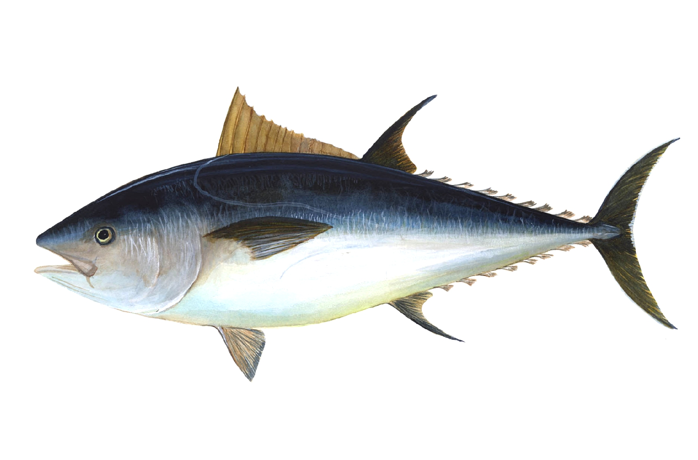
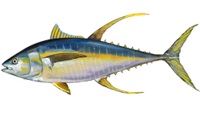
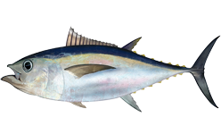
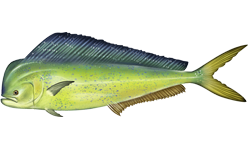
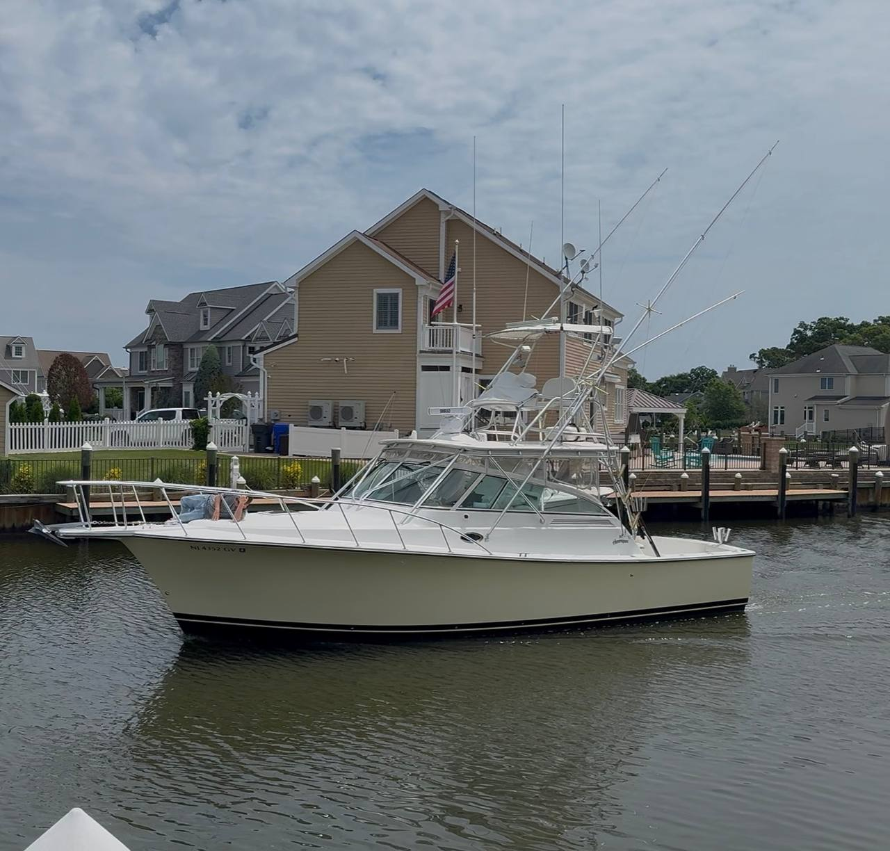

John
Henriques owner, canyon decision-maker, keeper of the numbers.
Brick, NJ to the canyons | July 3-4, 2026
The trip board for the Ofishal Business, John’s Henriques 35 Express: interactive chart, live wind and wave forecast, tides, bite windows, crew roster, and a log for the stories. Out of office. Strictly ofishal business.
Henriques owner, canyon decision-maker, keeper of the numbers.
Founding member. Knows every canyon story worth retelling, plus a few that aren't.
Deck presence, spread awareness, and cooler optimism when the bite gets quiet.
Steady hands, fish-box accountability, and morale when the run gets long.
Guest roster spot. Young eyes on the horizon, photos, jokes, and not touching the wrong thing.

First light and dusk are prime on the troll. The overnight jig bite loves a dark moon.

Bluefin tuna
Yellowfin tuna
Bigeye tuna
Mahi mahiUpdates save to this phone’s browser. Perfect for the recap.
Drop photos here during or after the trip to preview the highlight reel. Best shots get added to the page permanently for the recap.
